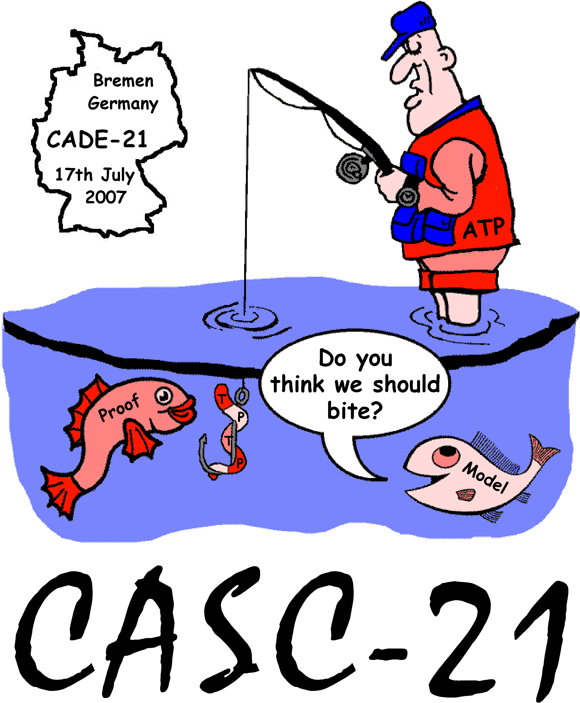

Solutions

Acceptable Proofs
- Inference steps reasonably fine-grained.
- Translations must be documented.
- Proofs must be in TPTP format.
- Proofs must be structurally correct
- Show only relevant inference steps
- Acyclic
- Formulae from the problem as leaves
- End at the conjecture for axiomatic proofs
- End at $false for refutations
- Correct roles - axiom, plain, negated_conjecture, etc.
- Correct status values - thm, cth, esa, etc.
- New symbols in definitions must introduced()
- Assumptions must be propagated and discharged
Acceptable Models
- Domain and mappings
- Explicit ground lists
- A clear, terminating algorithm
- Saturations whose models are a subset of the models of the input